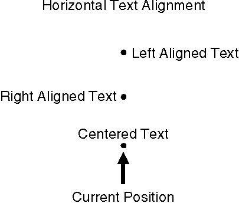

When a horizontal character string does not fill the width of the output area, it can be positioned in one of the three ways shown in the following figure. All of these options can be set directly with the lHorizontal option of GpiSetTextAlignment. 
Horizontal Positioning of Text Strings
Text justification requires an application to perform both queries and coordinate calculations. The following flags are used to specify types of horizontal alignment:
Horizontal Alignment Values
┌────────────────────────┬────────────────────────────────────┐ │Identifier │Alignment │ ├────────────────────────┼────────────────────────────────────┤ │TA_LEFT │On the left edge of the leftmost │ │ │character in the string │ ├────────────────────────┼────────────────────────────────────┤ │TA_RIGHT │On the right edge of the rightmost │ │ │character in the string │ ├────────────────────────┼────────────────────────────────────┤ │TA_CENTER │On the arithmetic mean of the │ │ │leftmost and rightmost characters in│ │ │the string │ └────────────────────────┴────────────────────────────────────┘
There are two sets of default values for the lHorizontal option. They are provided for compatibility and map into the horizontal alignment values described above.
GpiQueryGraphicsField, GpiQueryPageViewport, and GpiQueryViewingLimits all provide methods of determining the width of the output area so your application can specify coordinates properly for the current position.